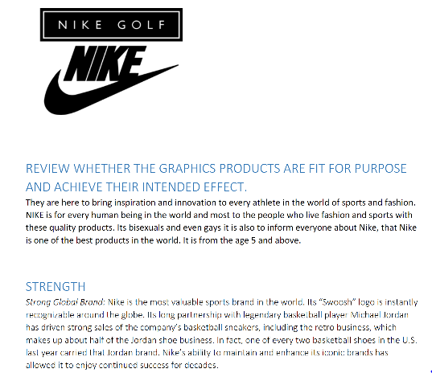
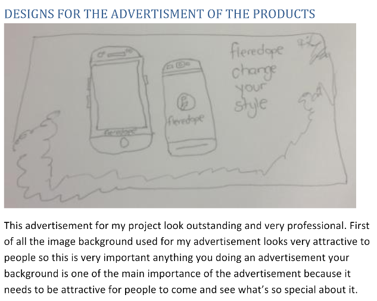
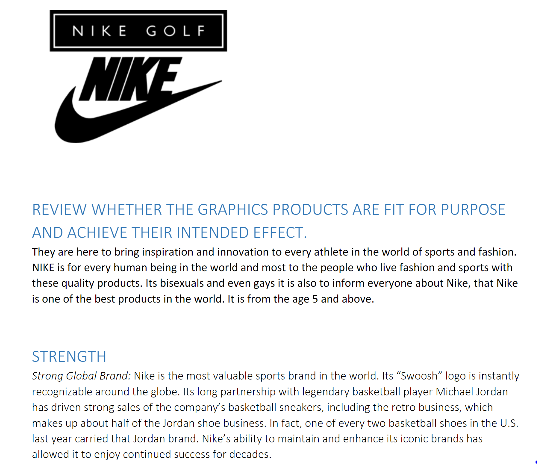
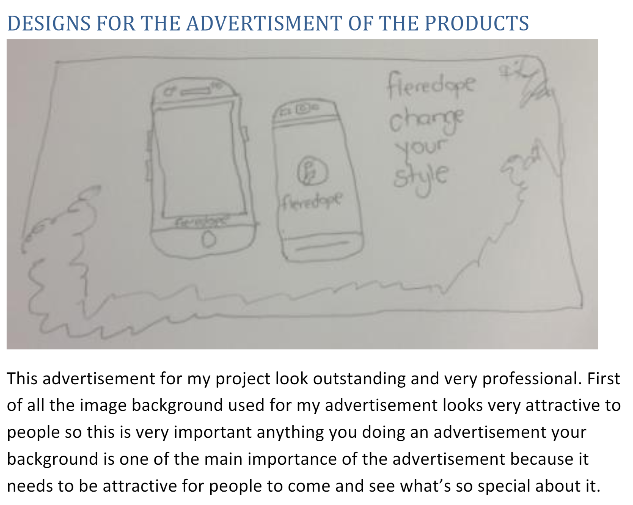

For the digital graphics we had to investigate the purpose two different graphic product. So we had to choose one of these graphic products which are (logos, signs, posters, magazine covers, packaging,, web pages, Engineering drawing and Manuals. I chose magazine covers and logos because there's a lot you can write about them. I talked about the meaning of the text, font size, characters and objects and the most important thing I explained about was the strength and weaknesses for both of them